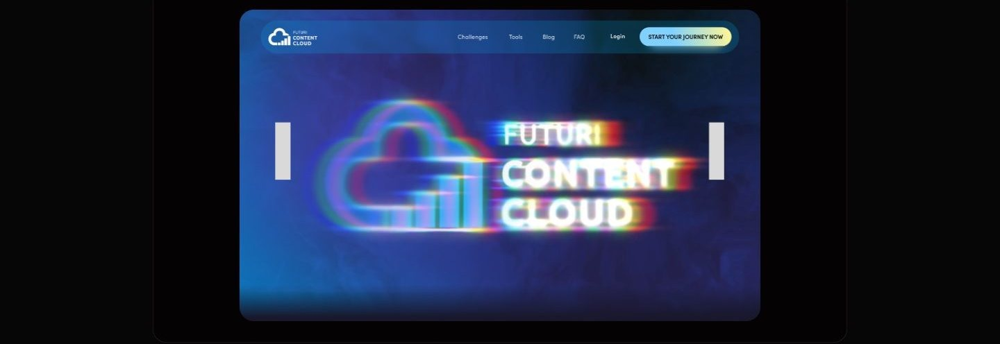
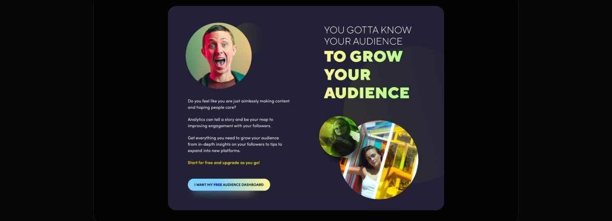
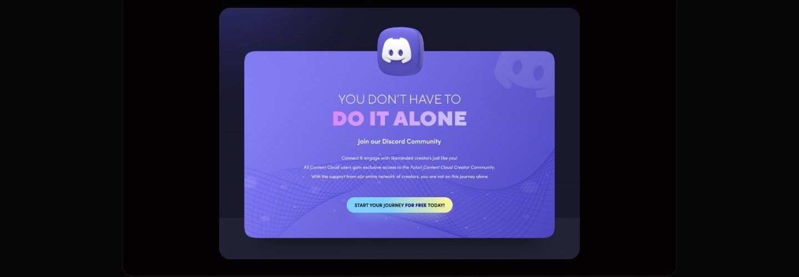
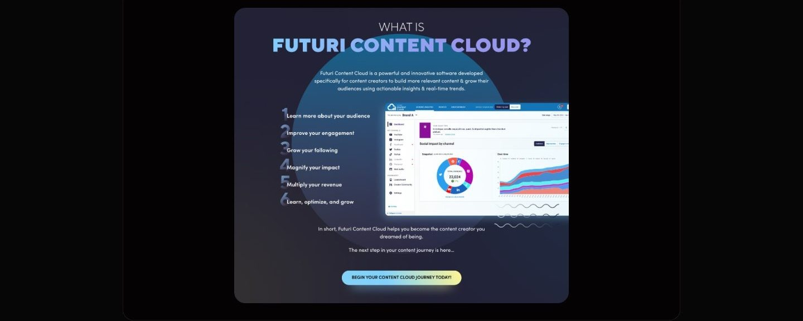

Case study 08 of 11 · Content platform · Independent concept project
Content Cloud
One workspace for planning, publishing, and tracking content.
2 min read

Marketing an analytics product to creators who distrust dashboards, without hiding the data behind hype.
How each landing section pairs a creator pain point with the exact tool that answers it, ending in one clear action.
Creators post constantly and still fly blind
Scheduling tools tell creators when they posted, not whether any of it worked or what to make next. Competitor platforms each solve one slice: scheduling, calendars, or reporting. Creators end up stitching tools together and still guessing at what to post, when to post it, and why growth stalls.
- No clear signal on which content types actually move an audience.
- Shallow analytics that describe the past instead of guiding the next post.
- Planning, insights, and collaboration split across separate, costly tools.
Desk research covered six competitors including Later, Hootsuite, Buffer, CoSchedule, Sprout Social, and ContentStudio, mapped by features, strengths, and gaps.
Every section earns the next scroll
The site walks a skeptical creator from identity to proof to community, and each section closes with a single unmistakable action.





What testing could and could not tell me
Moderated sessions confirmed people could navigate the site and find each answer, but only a live product could show whether the insights change what creators actually post.
As a concept project, testing was moderated task walkthroughs, not longitudinal use.
Appendix: foundations and system
The system underneath the marketing surface: a componentized navigation, card, and dropdown library on a 12-column grid, and tonal ramps for every brand color.